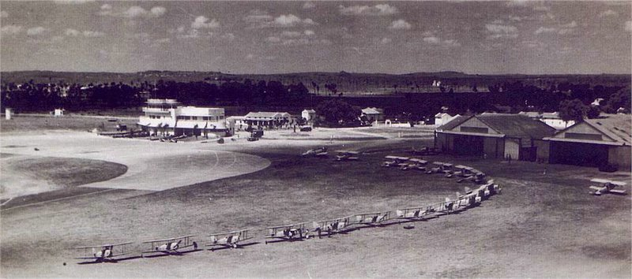
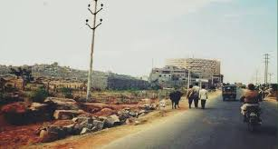

A city with rich history and heavenly past structures is steadily becoming host to likely the most present day structures, a blend of both the previous domains and the new corporate disturbance. To help Hyderabad's new development, the then Supervisor Minister of Andhra Pradesh Chandrababu Naidu successfully bid for the Public Games in 2002 and the Afro Asian games in 2003, close by a strong bid to make a Formula One circuit in the state.
These endeavors incited the headway of compelling games structure in Hyderabad. The Indian Establishment of Business (ISB) and IIT were furthermore gotten comfortable, a near endeavor to help current preparation.
Quick industrialisation has provoked the development in land costs while simultaneously driving the interest for establishment headway. Business advancement, along these lines, has been moved in the City Association of Hyderabad locale while the city has experienced a pressing factor in private turn of events.
As workers favor closeness to the workplace, their step by step drive has achieved the improvement of the road networks as well. During the nineties, several drives were taken up by the state government towards progress of the IT locale. These included setting up of IT arranging establishments, drives in e-association, movement of a Howdy Tech city and moving the Thing Improvement Park as an upheld objective for private district affiliations.
Steps were then taken significantly further to permit the improvement of an Equipment Park, game plan of an Information Park, and foundation of a cash related region. The inevitable result of these endeavors can be found as different parks. One called Minimal individual Valley has been set up to zero in on appraisal and arranging in biomedicine for present day creation.
Inside this valley are likewise settled the IKP Information Park and Alexandria Information Park with spaces of 200 sections of land and 300 fragments of land freely. These parks cover Ameerpet, Medchal, Uppal, and diverse different pieces of the Hyderabad Metropolitan region.
The push spaces of examination here solidify antibodies, bioinformatics, seeds, and so forth irrefutably the best in general drug and examination firms have game-plan their work spaces here. In like way, a Stuff Park of 1,000 700 spaces of land in the region is in addition being made.
The Hyderabad Metropolitan Headway Authority is driving the city to transform into the accompanying Silicon Valley. The State Organization of Telangana, and the Public authority of Andhra Pradesh before it, have put resources into surprising measures of energy to cultivate the city's present system.

The govt. has orchestrated amazing advancement in the More conspicuous Hyderabad region and is set to leave Pune and Bangalore far behind in several years. With eyes both on regular security and progression, the public authority is rearranging its a long way past one deterrent after another. In the event that plans are clung to, Hyderabad is set to transform into the accompanying tremendous present day marvel of the country.
Advancing System Improvement
On the side of present day new development, the city of Hyderabad has furthermore started to encourage establishments to help it. The system improvement is based on tremendously huge locales including roads, flyovers and cityscape, and further creating water supply.